- Приближённое значение квадратного корня
- Приближённое значение квадратного корня с недостатком и избытком
- Границы, в пределах которых располагаются корни
- Тождественные преобразования с квадратными корнями
- Задания для самостоятельного решения
Основные сведения
Чтобы найти площадь квадрата, нужно длину его стороны возвести во вторую степень.
Найдём площадь квадрата, длина стороны которого 3 см
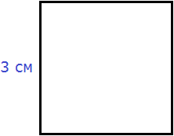
S = 32 = 9 см2
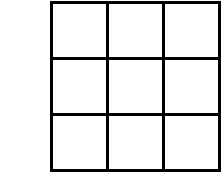
Теперь решим обратную задачу. А именно, зная площадь квадрата определим длину его стороны. Для этого воспользуемся таким инструментом как кóрень. Корень бывает квадратный, кубический, а также n-й степени.
Сейчас наш интерес вызывает квадратный корень. По другому его называют кóрнем второй степени.
Для нахождения длины стороны нашего квадрата, нужно найти число, вторая степень которого равна 9. Таковым является число 3. Это число и является кóрнем.
Введём для работы с корнями новые обозначения.
Символ кóрня выглядит как  . Это по причине того, что слово корень в математике употребляется как радикал. А слово радикал происходит от латинского radix (что в переводе означает корень). Первая буква слова radix это r впоследствии преобразилась в символ корня
. Это по причине того, что слово корень в математике употребляется как радикал. А слово радикал происходит от латинского radix (что в переводе означает корень). Первая буква слова radix это r впоследствии преобразилась в символ корня  .
.
Под корнем располагáют подкореннóе выражение. В нашем случае подкоренным выражением будет число 9 (площадь квадрата)
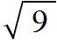
Нас интересовал квадратный корень (он же корень второй степени), поэтому слева над корнем указываем число 2. Это число называют показателем корня (или степенью корня)
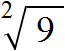
Получили выражение, которое читается так: «квадратный корень из числа 9». С этого момента возникает новая задача по поиску самогó корня.
Если число 3 возвести во вторую степень, то получится число 9. Поэтому число 3 и будет ответом:
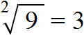
Значит квадрат площадью 9 см2 имеет сторону, длина которой 3 см. Приведённое действие называют извлечéнием квадрáтного кóрня.
Нетрудно догадаться, что квадратным корнем из числа 9 также является отрицательное число −3. При его возведении во вторую степень тоже получается число 9
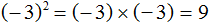
Получается, что выражение
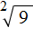
имеет два значения: 3 и −3. Но длина стороны квадрата не может быть отрицательным числом, поэтому для нашей задачи ответ будет только один, а именно 3.Вообще, квадратный корень имеет два противоположных значения: положительное и отрицательное.
Например, извлечём квадратный корень из числа 4
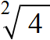
Это выражение имеет два значения: 2 и −2, поскольку при возведении этих чисел во вторую степень, получится один и тот же результат 4
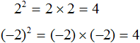
Поэтому ответ к выражению вида
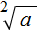
записывают с плюсом и минусом. Плюс с минусом означает, что квадратный корень имеет два противоположных значения.Запишем ответ к выражению
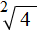
с плюсом и минусом: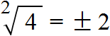
Определения
Дадим определение квадратному корню.
Квадратным корнем из числа a называют такое число b, вторая степень которого равна a.
То есть число b должно быть таким, чтобы выполнялось равенство b2 = a. Число b (оно же корень) обозначается через радикал так, что
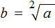
. На практике левая и правая часть поменяны местами и мы видим привычное выражение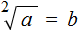
Например, квадратным корнем из числá 16 есть число 4, поскольку число 4 во второй степени равно 16
42 = 16
Корень 4 можно обозначить через радикал
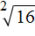
так, что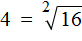
.Также квадратным корнем из числá 16 есть число −4, поскольку число −4 во второй степени равно 16
(−4)2 = 16
Если при решении задачи интересует только положительное значение, то корень называют не просто квадратным, а арифметическим квадратным.
Арифметический квадратный корень из числá a — это неотрицательное число b (b ≥ 0), при котором выполняется равенство b2 = a.
В нашем примере квадратными корнями из числá 16 являются корни 4 и −4, но арифметическим из них является только корень 4.
В разговорном языке можно использовать сокращение. К примеру, выражение полностью читается так: «квадратный корень из числá шестнадцать», а в сокращённом варианте можно прочитать так: «корень из шестнадцати».
Не следует путать понятия корень и квадрат. Квадрат это число, которое получилось в результате возведения какого-нибудь числá во вторую степень. Например, числа 25, 36, 49 являются квадратами, потому что они получились в результате возведения во вторую степень чисел 5, 6 и 7 соответственно.
Корнями же являются числа 5, 6 и 7. Они являются теми числами, которые во второй степени равны 25, 36 и 49 соответственно.
Чаще всего в квадратных корнях показатель кóрня вообще не указывается. Так, вместо записи можно использовать запись
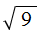
. Если в учебнике по математике встретится корень без показателя, то нужно понимать, что это квадратный корень.Квадратный корень из единицы равен единице. То есть справедливо следующее равенство:
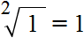
Это по причине того, что единица во второй степени равна единице:
12 = 1
и квадрат, состоящий из одной квадратной единицы, имеет сторону, равную единице:
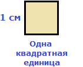
Квадратный корень из нуля равен нулю. То есть справедливо равенство
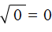
, поскольку 02 = 0.Выражение вида
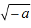
смысла не имеет. Например, не имеет смысла выражение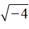
, поскольку вторая степень любого числа есть число положительное. Невозможно найти число, вторая степень которого будет равна −4.Если выражение вида
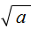
возвести во вторую степень, то есть если записать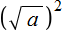
, то это выражение будет равно подкореннóму выражению a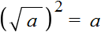
Например, выражение
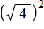
равно 4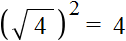
Это потому что выражение
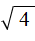
равно значению 2. Но это значение сразу возвóдится во вторую степень и получается результат 4.Еще примеры:
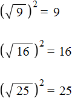
Корень из квадрата числá равен модулю этого числá:

Например, корень из числá 5, возведённого во вторую степень, равен модулю числá 5
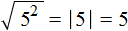
Это же правило будет срабатывать, если во вторую степень возвóдится отрицательное число. То есть, ответ опять же станет положительным. Например, корень из числá −5, возведённого во вторую степень, равен модулю числá −5. А модуль числа −5 равен 5
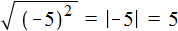
Действительно, если не пользуясь правилом
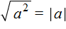
, вычислять выражение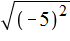
последовательно — сначала возвести число −5 во вторую степень, затем извлечь полученный результат, то полýчим ответ 5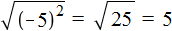
Не следует путать правило с правилом
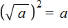
. Правило верно при любом a, тогда как правило верно в том случае, если выражение имеет смысл.В некоторых учебниках знак корня может выглядеть без верхней линии. Выглядит это так:
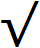
Примеры: √4, √9, √16.
Мéньшему числу соответствует мéньший корень, а бóльшему числу соответствует бóльший корень.
Например, рассмотрим числа 49 и 64. Число 49 меньше, чем число 64.
\[49 < 64\]
Если извлечь квадратные корни из этих чисел, то числу 49 будет соответствовать меньший корень, а числу 64 — бóльший. Действительно, √49 = 7, а √64 = 8,
√49 < √64
Отсюда:
\[7 < 8\]
Примеры извлечения квадратных корней
Рассмотрим несколько простых примеров на извлечение квадратных корней.
Пример 1. Извлечь квадратный корень √36
Данный квадратный корень равен числу, квадрат которого равен 36. Таковым является число 6, поскольку 62 = 36
√36 = 6
Пример 2. Извлечь квадратный корень √49
Данный квадратный корень равен числу, квадрат которого равен 49. Таковым является число 7, поскольку 72 = 49
√49 = 7
В таких простых примерах достаточно знать таблицу умножения. Так, мы помним, что число 49 входит в таблицу умножения на семь. То есть:
\[7 \times 7 = 49\]
Но 7 × 7 это 72
72 = 49
Отсюда, √49 = 7.
Пример 3. Извлечь квадратный корень √100
Данный квадратный корень равен числу, квадрат которого равен 100. Таковым является число 10, поскольку 102 = 100
√100 = 10
Число 100 это последнее число, корень которого можно извлечь с помощью таблицы умножения. Для чисел, бóльших 100, квадратные корни можно находить с помощью таблицы квадратов.
Пример 3. Извлечь квадратный корень √256
Данный квадратный корень равен числу, квадрат которого равен 256. Чтобы найти это число, воспользуемся таблицей квадратов.
Нахóдим в таблице квадратов число 256 и двигаясь от него влево и вверх определяем цифры, которые образуют число, квадрат которого равен 256.
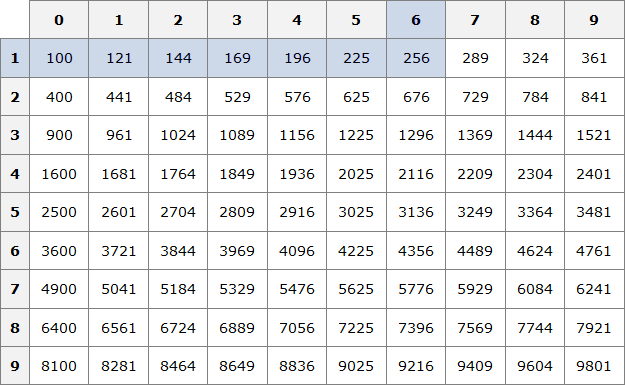
Видим, что это число 16. Значит √256 = 16.
Пример 4. Найти значение выражения 2√16
В данном примере число 2 умножается на выражение с корнем. Сначала вычислим корень √16, затем перемнóжим его с числом 2
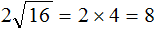
Пример 7. Решить уравнение
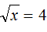
В данном примере нужно найти значение переменной x, при котором левая часть будет равна 4.
Значение переменной x равно 16, поскольку
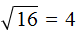
. Значит корень уравнения равен 16.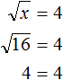
Примечание. Не следует путать корень уравнения и квадратный корень. Корень уравнения это значение переменной, при котором уравнение обращается в верное числовое равенство. А квадратный корень это число, вторая степень которого равна выражению, находящемуся под радикалом  .
.
Подобные примеры решают, пользуясь определением квадратного корня. Давайте и мы поступим так же.
Из определения мы знаем, что квадратный корень равен числу b, при котором выполняется равенство b2 = a.
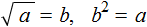
Применим равенство b2 = a к нашему примеру . Роль переменной b у нас играет число 4, а роль переменной a — выражение, находящееся под корнем
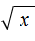
, а именно переменная x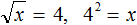
В выражении 42 = x вычислим левую часть, полýчим 16 = x. Поменяем левую и правую часть местами, полýчим x = 16. В результате приходим к тому, что нашлось значение переменной x.
Пример 8. Решить уравнение
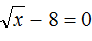
Перенесем −8 в правую часть, изменив знак:
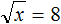
Возведем правую часть во вторую степень и приравняем её к переменной x
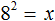
Вычислим правую часть, полýчим 64 = x. Поменяем левую и правую часть местами, полýчим x = 64. Значит корень уравнения равен 64
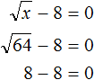
Пример 9. Решить уравнение
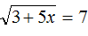
Воспользуемся определением квадратного корня:
Роль переменной b играет число 7, а роль переменной a — подкореннóе выражение 3 + 5x. Возведем число 7 во вторую степень и приравняем его к 3 + 5x
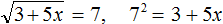
В выражении 72 = 3 + 5x вычислим левую часть полýчим 49 = 3 + 5x. Получилось обычное линейное уравнение. Решим его:
Корень уравнения равен . Выполним проверку, подставив его в исходное уравнение:
Пример 10. Найти значение выражения
В этом выражении число 2 умножается на квадратный корень из числа 49.
Сначала нужно извлечь квадратный корень и перемножить его с числом 2
Приближённое значение квадратного корня
Не каждый квадратный корень можно извлечь. Извлечь квадратный корень можно только в том случае, если удаётся найти число, вторая степень которого равна подкореннóму выражению.
Например, извлечь квадратный корень можно, потому что удаётся найти число, вторая степень которого равна подкореннóму выражению. Таковым является число 8, поскольку 82 = 64. То есть
А извлечь квадратный корень нельзя, потому что невозможно найти число, вторая степень которого равна 3. В таком случае говорят, что квадратный корень из числа 3 не извлекается.
Зато можно извлечь квадратный корень из числа 3 приближённо. Извлечь квадратный корень приближённо означает найти значение, которое при возведении во вторую степень будет максимально близко к подкореннóму выражению.
Приближённое значение ищут с определенной точностью: с точностью до целых, с точностью до десятых, с точностью до сотых и так далее.
Найдём значение корня приближённо с точностью до десятых. Словосочетание «с точностью до десятых» говорит о том, что приближённое значение корня будет представлять собой десятичную дробь, у которой после запятой одна цифра.
Для начала найдём ближайшее меньшее число, корень которого можно извлечь. Таковым является число 1. Корень из этого числа равен самому этому числу:
√1 = 1
Аналогично находим ближайшее бóльшее число, корень которого можно извлечь. Таковым является число 4. Корень из этого числа равен 2
√4 = 2
√1 меньше, чем √4
√1 < √4
А √3 больше, чем √1 но меньше, чем √4. Запишем это в виде двойного неравенства:
√1 < √3 < √4
Точные значения корней √1 и √4 известны. Это числа 1 и 2
1 < √3 < 2
Тогда очевидно, что значение корня √3 будет представлять собой десятичную дробь, потому что между числами 1 и 2 нет целых чисел.
Для нахождения приближённого значения квадратного корня √3 будем проверять десятичные дроби, располагающиеся в интервале от 1 до 2, возводя их в квадрат. Делать это будем до тех пор пока не полýчим значение, максимально близкое к 3. Проверим к примеру дробь 1,1
1,12 = 1,21
Получился результат 1,21, который не очень близок к подкореннóму выражению 3. Значит 1,1 не годится в качестве приближённого значения квадратного корня √3, потому что оно малó.
Проверим тогда дробь 1,8
1,82 = 3,24
Получился результат 3,24, который близок к подкореннóму выражению, но превосходит его на 0,24. Значит 1,8 не годится в качестве приближенного значения корня √3, потому что оно великó.
Проверим тогда дробь 1,7
1,72 = 2,89
Получился результат 2,89, который уже близок к подкореннóму выражению. Значит 1,7 и будет приближённым значением квадратного корня √3. Напомним, что знак приближенного значения выглядит как ≈
√3 ≈ 1,7
Значение 1,6 проверять не нужно, потому что в результате получится число 2,56, которое дальше от трёх, чем значение 2,89. А значение 1,8, как было показано ранее, является уже большим.
В данном случае мы нашли приближенное значение корня √3 с точностью до десятых. Значение можно получить ещё более точно. Для этого его следует находить с точностью до сотых.
Чтобы найти значение с точностью до сотых проверим десятичные дроби в интервале от 1,7 до 1,8
1,7 < √3 < 1,8
Проверим дробь 1,74
1,742 = 3,0276
Получился результат 3,0276, который близок к подкореннóму выражению, но превосходит его на 0,0276. Значит значение 1,74 великó для корня √3.
Проверим тогда дробь 1,73
1,732 = 2,9929
Получился результат 2,9929, который близок к подкореннóму выражению √3. Значит 1,73 будет приближённым значением квадратного корня √3 с точностью до сотых.
Процесс нахождения приближённого значения квадратного корня продолжается бесконечно. Так, корень √3 можно находить с точностью до тысячных, десятитысячных и так далее:
√3 = 1,732 (вычислено с точностью до тысячных)
√3 = 1,7320 (вычислено с точностью до десятитысячных)
√3 = 1,73205 (вычислено с точностью до ста тысячных).
Ещё квадратный корень можно извлечь с точностью до целых. Приближённое значение квадратного корня √3 с точностью до целых равно единице:
√3 ≈ 1
Значение 2 будет слишком большим, поскольку при возведении этого числа во вторую степень получается число 4, которое больше подкоренного выражения. Нас же интересуют значения, которые при возведении во вторую степень равны подкореннóму выражению или максимально близки к нему, но не превосходят его.
В зависимости от решаемой задачи допускается находить значение, вторая степень которого больше подкоренного выражения. Это значение называют приближённым значением квадратного корня с избытком. Поговорим об этом подробнее.
Приближенное значение квадратного корня с недостатком или избытком
Иногда можно встретить задание, в котором требуется найти приближённое значение корня с недостатком или избытком.
В предыдущей теме мы нашли приближённое значение корня √3 с точностью до десятых с недостатком. Недостаток понимается в том смысле, что до значения 3 нам недоставало ещё некоторых частей. Так, найдя приближённое значение √3 с точностью до десятых, мы получили 1,7. Это значение является значением с недостатком, поскольку при возведении этого числа во вторую степень полýчим результат 2,89. Этому результату недостаёт ещё 0,11 чтобы получить число 3. То есть, 2,89 + 0,11 = 3.
С избытком же называют приближённые значения, которые при возведении во вторую степень дают результат, который превосходит подкореннóе выражение. Так, вычисляя корень √3 приближённо, мы проверили значение 1,8. Это значение является приближённым значением корня √3 с точностью до десятых с избытком, поскольку при возведении 1,8 во вторую степень, получаем число 3,24. Этот результат превосходит подкореннóе выражение на 0,24. То есть 3,24 − 3 = 0,24.
Приближённое значение квадратного корня √3 с точностью до целых тоже был найден с недостатком:
√3 ≈ 1
Это потому что при возведении единицы в квадрат получаем единицу. То есть до числа 3 недостаёт ещё 2.
Приближённое значение квадратного корня √3 с точностью до целых можно найти и с избытком. Тогда этот корень приближённо будет равен 2
√3 ≈ 2
Это потому что при возведении числа 2 в квадрат получаем 4. Число 4 превосходит подкореннóе выражение 3 на единицу. Извлекая приближённо квадратный корень с избытком желательно уточнять, что корень извлечен именно с избытком:
√3 ≈ 2 (с избытком)
Потому что приближённое значение чаще всего ищется с недостатком, чем с избытком.
Дополнительно следует упомянуть, что в некоторых учебниках словосочетания «с точностью до целых», «с точностью до десятых», с «точностью до сотых», заменяют на словосочетания «с точностью до 1», «с точностью до 0,1», «с точностью до 0,01» соответственно.
Так, если в задании сказано извлечь квадратный корень из числа 5 с точностью до 0,01, то это значит что корень следует извлекать приближённо с точностью до сотых:
√5 ≈ 2,23
Пример 2. Извлечь квадратный корень из числа 51 с точностью до 1
√51 ≈ 7
Пример 3. Извлечь квадратный корень из числа 51 с точностью до 0,1
√51 ≈ 7,1
Пример 4. Извлечь квадратный корень из числа 51 с точностью до 0,01
√51 ≈ 7,14
Границы, в пределах которых располагаются корни
Если исходное число принадлежит промежутку [1; 100], то квадратный корень из этого исходного числа будет принадлежать промежутку [1; 10].
Например, пусть исходным числом будет 64. Данное число принадлежит промежутку [1; 100]. Сразу делаем вывод, что квадратный корень из числа 64 будет принадлежать промежутку [1; 10]. Теперь вспоминаем таблицу умножения. Какое перемножение двух одинаковых сомножителей даёт в результате 64? Ясно, что перемножение 8 × 8, а это есть 82 = 64. Значит квадратный корень из числа 64 есть 8
Пример 2. Извлечь квадратный корень из числа 49
Число 49 принадлежит промежутку [1; 100]. Значит квадратный корень будет принадлежать промежутку [1; 10]. Этим корнем будет число 7, поскольку 72 = 49
√49 = 7
Пример 2. Извлечь квадратный корень из числа 1
Число 1 принадлежит промежутку [1; 100]. Значит квадратный корень будет принадлежать промежутку [1; 10]. Этим корнем будет число 1, поскольку 12 = 1
√1 = 1
Пример 3. Извлечь квадратный корень из числа 100
Число 100 принадлежит промежутку [1; 100]. Значит квадратный корень будет принадлежать промежутку [1; 10]. Этим корнем будет число 10, поскольку 102 = 100
√100 = 10
Понятно, что промежуток [1; 100] содержит ещё и числа, квадратные корни из которых не извлекаются. Для таких чисел корень нужно извлекать приближённо. Тем не менее, приближённый корень тоже будет располагаться в пределах промежутка [1; 10].
Например, извлечём квадратный корень из числа 37. Нет целого числа, вторая степень которого была бы равна 37. Поэтому извлекать квадратный корень следует приближённо. Извлечём его к примеру с точностью до сотых:
√37 ≈ 6,08
Для облегчения можно находить ближайшее меньшее число, корень из которого извлекается. Таковым в данном примере было число 36. Квадратный корень из него равен 6. И далее отталкиваясь от числа 6, можно находить приближённое значение корня √37, проверяя различные десятичные дроби, целая часть которых равна 6.
Квадраты чисел от 1 до 10 обязательно нужно знать наизусть. Ниже представлены эти квадраты:
12 = 1
22 = 4
32 = 9
42 = 16
52 = 25
62 = 36
72 = 49
82 = 64
92 = 81
102 = 100
И обратно, следует знать значения квадратных корней этих квадратов:
Если к любому числу от 1 до 10 в конце дописать ноль (или несколько нулей), и затем возвести это число во вторую степень, то в полученном числе будет в два раза больше нулей.
Например, 62 = 36. Допишем к числу 6 один ноль, полýчим 60. Возведём число 60 во вторую степень, полýчим 3600
602 = 3600
А если к числу 6 дописать два нуля, и возвести это число во вторую степень, то полýчим число, в котором четыре нуля. То есть в два раза больше нулей:
6002 = 360000
Тогда можно сделать следующий вывод:
Если исходное число содержит знакомый нам квадрат и чётное количество нулей, то можно извлечь квадратный корень из этого числа. Для этого следует извлечь корень из знакомого нам квадрата и затем записать половину количества нулей из исходного числа.
Например, извлечём квадратный корень из числа 900. Видим, что в данном числе есть знакомый нам квадрат 9. Извлекаем из него корень, получаем 3
Теперь из исходного числа записываем половину от количества нулей. В исходном числе 900 содержится два нуля. Половина этого количества нулей есть один ноль. Записываем его в ответе после цифры 3
Пример 2. Извлечём квадратный корень из числа 90000
Здесь опять же имеется знакомый нам квадрат 9 и чётное количество нулей. Извлекаем корень из числа 9 и записываем половину от количества нулей. В исходном числе содержится четыре нуля. Половиной же этого количества нулей будет два нуля:
Пример 3. Извлечем квадратный корень из числа 36000000
Здесь имеется знакомый нам квадрат 36 и чётное количество нулей. Извлекаем корень из числа 36 и записываем половину от количества нулей. В исходном числе шесть нулей. Половиной же будет три нуля:
Пример 4. Извлечем квадратный корень из числа 2500
Здесь имеется знакомый нам квадрат 25 и чётное количество нулей. Извлекаем корень из числа 25 и записываем половину от количества нулей. В исходном числе два нуля. Половиной же будет один ноль:
Если подкореннóе число увеличить (или уменьшить) в 100, 10000 то корень увеличится (или уменьшится) в 10, 100 раз соответственно.
Например, . Если увеличим подкореннóе число в 100 раз, то квадратный корень увеличится в 10 раз:
И наоборот, если в равенстве уменьшим подкореннóе число в 100 раз, то квадратный корень уменьшится в 10 раз:
Пример 2. Увеличим в равенстве подкореннóе число в 10000, тогда квадратный корень 70 увеличиться в 100 раз
Пример 3. Уменьшим в равенстве подкореннóе число в 100 раз, тогда квадратный корень 70 уменьшится в 10 раз
Эта закономерность позволяет извлечь квадратный корень из десятичной дроби, если в данной дроби после запятой содéржатся две цифры, и эти две цифры образуют знакомый нам квадрат. В таких случаях данную десятичную дробь следует умножить на 100. Затем извлечь квадратный корень из получившегося числа и уменьшить подкореннóе число в сто раз.
Например, извлечём квадратный корень из числа 0,25. В данной десятичной дроби после запятой содержатся две цифры и эти две цифры образуют знакомый нам квадрат 25.
Умнóжим десятичную дробь 0,25 на 100, полýчим 25. А из числа 25 квадратный корень извлекается легко:
Но нам изначально нужно было извлечь корень из 0,25, а не из 25. Чтобы исправить ситуацию, вернём нашу десятичную дробь. Если в равенстве подкореннóе число уменьшить в 100 раз, то полýчим под корнем 0,25 и соответственно ответ уменьшится в 10 раз:
Обычно в таких случаях достаточно уметь передвигáть запятую. Потому что сдвинуть в числе запятую вправо на две цифры это всё равно что умножить это число на 100.
В предыдущем примере в подкоренном числе 0,25 можно было сдвинуть запятую вправо на две цифры, а в полученном ответе сдвинуть её влево на одну цифру.
Например, извлечем корень из числа 0,81. Мысленно передвинем запятую вправо на две цифры, полýчим 81. Теперь извлечём квадратный корень из числа 81, полýчим ответ 9. В ответе 9 передвинем запятую влево на одну цифру, полýчим 0,9. Значит, .
Это правило работает и в ситуации, когда после запятой содержатся четыре цифры и эти цифры образуют знакомый нам квадрат.
Например, десятичная дробь 0,1225 содержит после запятой четыре цифры. Эти четыре цифры образуют число 1225, квадратный корень из которого равен 35.
Тогда можно извлечь квадратный корень и из 0,1225. Умнóжим данную десятичную дробь на 10000, полýчим 1225. Из числа 1225 квадратный корень можно извлечь с помощью таблицы квадратов:
Но нам изначально нужно было извлечь корень из 0,1225, а не из 1225. Чтобы исправить ситуацию, в равенстве подкореннóе число уменьшим в 10000 раз. В результате под корнем образуется десятичная дробь 0,1225, а правая часть уменьшится в 100 раз
Эта же закономерность будет работать и при извлечении корней из дробей вида 12,25. Если цифры из которых состоит десятичная дробь образуют знакомый нам квадрат, при этом после запятой содержится чётное количество цифр, то можно извлечь корень из этой десятичной дроби.
Умнóжим десятичную дробь 12,25 на 100, полýчим 1225. Извлечём корень из числа 1225
Теперь в равенстве уменьшим подкореннóе число в 100 раз. В результате под корнем образуется число 12,25, и соответственно ответ уменьшится в 10 раз
Если исходное число принадлежит промежутку [100; 10000], то квадратный корень из этого исходного числа будет принадлежать промежутку [10; 100].
В этом случае применяется таблица квадратов:
Например, пусть исходным числом будет 576. Данное число принадлежит промежутку [100; 10000]. Сразу делаем вывод, что квадратный корень из числа 576 будет принадлежать промежутку [10; 100]. Теперь открываем таблицу квадратов и смотрим какое число во второй степени равно 576
Видим, что это число 24. Значит .
Пример 2. Извлечь квадратный корень из числа 432.
Число 432 принадлежит промежутку [100; 10000]. Значит квадратный корень следует искать в промежутке [10; 100]. Открываем таблицу квадратов и смотрим какое число во второй степени равно 432. Обнаруживаем, что число 432 в таблице квадратов отсутствует. В этом случае квадратный корень следует искать приближённо.
Извлечем квадратный корень из числа 432 с точностью до десятых.
В таблице квадратов ближайшее меньшее число к 432 это число 400. Квадратный корень из него равен 20. Отталкиваясь от числа 20, будем проверять различные десятичные дроби, целая часть которых равна 20.
Проверим, например, число 20,8. Для этого возведём его в квадрат:
20,82 = 432,64
Получилось число 432,64 которое превосходит исходное число 432 на 0,64. Видим, что значение 20,8 великó для корня √432. Проверим тогда значение 20,7
20,72 = 428,49
Значение 20,7 годится в качестве корня, поскольку в результате возведения этого числа в квадрат получается число 428,49, которое меньше исходного числа 432, но близко к нему. Значит √432 ≈ 20,7.
Необязательно запоминать промежутки чтобы узнать в каких границах располагается корень. Можно воспользоваться методом нахождения ближайших квадратов с чётным количеством нулей на конце.
Например, извлечём корень из числа 4225. Нам известен ближайший меньший квадрат 3600, и ближайший больший квадрат 4900
\[3600 < 4225 < 4900\]
Извлечём квадратные корни из чисел 3600 и 4900. Это числа 60 и 70 соответственно:
Тогда можно понять, что квадратный корень из числа 4225 располагается между числами 60 и 70. Можно даже найти его методом подбора. Корни 60 и 70 исключаем сразу, поскольку это корни чисел 3600 и 4900. Затем можно проверить, например, корень 64. Возведём его в квадрат (или умнóжим данное число само на себя)
Корень 64 не годится. Проверим корень 65
Получается 4225. Значит 65 является корнем числа 4225
Тождественные преобразования с квадратными корнями
Над квадратными корнями можно выполнять различные тождественные преобразования, тем самым облегчая их вычисление. Рассмотрим некоторые из этих преобразований.
Квадратный корень из произведения
Квадратный корень из произведения это выражение вида , где a и b некоторые числа.
Например, выражение является квадратным корнем из произведения чисел 4 и 9.
Чтобы извлечь такой квадратный корень, нужно по отдельности извлечь квадратные корни из множителей 4 и 9, представив выражение в виде произведения корней . Вычислив по отдельности эти корни полýчим произведение 2 × 3, которое равно 6
Конечно, можно не прибегать к таким манипуляциям, а вычислить сначала подкореннóе выражение 4 × 9, которое равно 36. Затем извлечь квадратный корень из числа 36
Но при извлечении квадратных корней из больших чисел это правило может оказаться весьма полезным.
Допустим, потребовалось извлечь квадратный корень из числа 144. Этот корень легко определяется с помощью таблицы квадратов — он равен 12
Но предстáвим, что таблицы квадратов под рукой не оказалось. В этом случае число 144 можно разложить на простые множители. Затем из этих простых множителей составить числа, квадратные корни из которых извлекаются.
Итак, разлóжим число 144 на простые множители:
Получили следующее разложение:
В разложéнии содержатся четыре двойки и две тройки. При этом все числа, входящие в разложение, перемнóжены. Это позволяет предстáвить произведения одинаковых сомножителей в виде степени с показателем 2.
Тогда четыре двойки можно заменить на запись 22 × 22, а две тройки заменить на 32
В результате будем иметь следующее разложение:
Теперь можно извлекáть квадратный корень из разложения числа 144
Применим правило извлечения квадратного корня из произведения:
Ранее было сказано, что если подкореннóе выражение возведенó во вторую степень, то такой квадратный корень равен модулю из подкореннóго выражения.
Тогда получится произведение 2 × 2 × 3, которое равно 12
Простые множители представляют в виде степени для удобства и короткой записи. Допускается также записывать их под кóрнем как есть, чтобы впоследствии перемнóжив их, получить новые сомножители.
Так, разложив число 144 на простые множители, мы получили разложение 2 × 2 × 2 × 2 × 3 × 3. Это разложение можно записать под кóрнем как есть:
затем перемнóжить некоторые сомножители так, чтобы получились числа, квадратные корни из которых извлекаются. В данном случае можно дважды перемнóжить две двойки и один раз перемнóжить две тройки:
Затем применить правило извлечения квадратного корня из произведения и получить окончательный ответ:
С помощью правила извлечения квадратного корня из произведения можно извлекать корень и из других больших чисел. В том числе, из тех чисел, которых нет в таблице квадратов.
Например, извлечём квадратный корень из числа 13456. Этого числа нет в таблице квадратов, поэтому воспользуемся правилом извлечения квадратного корня из произведения, предварительно разложив число 13456 на простые множители.
Итак, разложим число 13456 на простые множители:
В разложении имеются четыре двойки и два числа 29. Двойки дважды предстáвим как 22. А два числа 29 предстáвим как 292. В результате полýчим следующее разложение числа 13456
Теперь будем извлекать квадратный корень из разложения числа 13456
Итак, если a ≥ 0 и b ≥ 0, то . То есть корень из произведения неотрицательных множителей равен произведению корней из этих множителей.
Докажем равенство . Для этого воспользуемся определением квадратного корня.
Согласно определению, квадратным корня из числа a есть число b, при котором выполняется равенство b2 = a.
В нашем случае нужно удостовериться, что правая часть равенства при возведении во вторую степень даст в результате подкореннóе выражение левой части, то есть выражение ab.
Итак, выпишем правую часть равенства и возведём ее во вторую степень:
Теперь воспользуемся правилом возведения в степень произведения. Согласно этому правилу, каждый множитель данного произведения нужно возвести в указанную степень:
Ранее было сказано, что если выражение вида возвести во вторую степень, то получится подкореннóе выражение. Применим это правило. Тогда полýчим ab. А это есть подкореннóе выражение квадратного корня
Значит равенство справедливо, поскольку при возведéнии правой части во вторую степень, получается подкореннóе выражение левой части.
Правило извлечения квадратного корня из произведения работает и в случае, если под кóрнем располагается более двух множителей. То есть справедливым будет следующее равенство:
, при a ≥ 0 и b ≥ 0, c ≥ 0.
Пример 1. Найти значение квадратного корня
Запишем корень в виде произведения корней, извлечём их, затем найдём значение полученного произведения:
Пример 2. Найти значение квадратного корня
Предстáвим число 250 в виде произведения чисел 25 и 10. Делать это будем под знáком корня:
Теперь под кóрнем образовалось два одинаковых множителя 10 и 10. Перемнóжим их, полýчим 100
Далее применяем правило извлечения квадратного кóрня из произведения и получáем окончательный ответ:
Пример 3. Найти значение квадратного корня
Воспользуемся правилом возведения степени в степень. Степень 114 предстáвим как (112)2.
Теперь воспользуемся правилом извлечения квадратного кóрня из квадрата числа:
В нашем случае квадратный корень из числа (112)2 будет равен 112. Говоря простым языком, внешний показатель степени 2 исчезнет, а внутренний останется:
Далее возводим число 11 во вторую степень и получаем окончательный ответ:
Этот пример также можно решить, воспользовавшись правилом извлечения квадратного корня из произведения. Для этого подкореннóе выражение 114 нужно записать в виде произведения 112 × 112. Затем извлечь квадратный корень из этого произведения:
Пример 4. Найти значение квадратного корня
Перепишем степень 34 в виде (32)2, а степень 56 в виде (53)2
Далее используем правило извлечения квадратного кóрня из произведения:
Далее используем правило извлечения квадратного кóрня из квадрата числа:
Вычислим произведение получившихся степеней и полýчим окончательный ответ:
Сомножители, находящиеся под корнем, могут быть десятичными дробями. Например, извлечём квадратный корень из произведения
Запишем корень в виде произведения корней, извлечём их, затем найдём значение полученного произведения:
Пример 6. Найти значение квадратного корня
Пример 7. Найти значение квадратного корня
Если первый сомножитель умножить на число n, а второй сомножитель разделить на это число n, то произведение не изменится.
Например, произведение 8 × 4 равно 32
\[8 \times 4 = 32\]
Умнóжим сомножитель 8 скажем на число 2, а сомножитель 4 раздéлим на это же число 2. Тогда получится произведение 16 × 2, которое тоже равно 32.
\[(8 \times 2) \times (4 : 2) = 32\]
Это свойство полезно при решении некоторых задач на извлечение квадратных корней. Сомножители подкореннóго выражения можно умнóжить и разделить так, чтобы корни из них извлекались.
Например, извлечём квадратный корень из произведения . Если сразу воспользоваться правилом извлечения квадратного корня из произведения, то не полýчится извлечь корни √1,6 и √90, потому что они не извлекаются.
Проанализировав подкореннóе выражение 1,6 × 90, можно заметить, что если первый сомножитель 1,6 умножить на 10, а второй сомножитель 90 разделить на 10, то полýчится произведение 16 × 9. Из такого произведения квадратный корень можно извлечь, пользуясь правилом извлечения квадратного корня из произведения.
Запишем полное решение данного примера:
Процесс умножения и деления можно выполнять в уме. Также можно пропустить подробную запись извлечения квадратного корня из каждого сомножителя. Тогда решение станóвится короче:
Пример 9. Найти значение квадратного корня
Умнóжим первый сомножитель на 10, а второй раздéлим на 10. Тогда под кóрнем образуется произведение 36 × 0,04, квадратный корень из которого извлекается:
Если в равенстве поменять местами левую и правую часть, то полýчим равенство . Это преобразовáние позволяет упрощáть вычисление некоторых корней.
Например, узнáем чему равно значение выражения .
Квадратные корни из чисел 10 и 40 не извлекаются. Воспользуемся правилом , то есть заменим выражение из двух корней на выражение с одним корнем, под которым будет произведение из чисел 10 и 40
Теперь найдём значение произведения, находящегося под корнем:
А квадратный корень из числа 400 извлекается. Он равен 20
Сомножители, располагáющиеся под корнем, можно расклáдывать на множители, группировáть, представлять в виде степени, а также перемножáть для получения новых сомножителей, корни из которых извлекаются.
Например, найдём значение выражения .
Воспользуемся правилом
Сомножитель 32 это 25. Предстáвим этот сомножитель как 2 × 24
Перемнóжим сомножители 2 и 2, полýчим 4. А сомножитель 24 предстáвим в виде степени с показателем 2
Теперь воспóльзуемся правилом и вычислим окончательный ответ:
Пример 12. Найти значение выражения
Воспользуемся правилом
Сомножитель 8 это 2 × 2 × 2, а сомножитель 98 это 2 × 7 × 7
Теперь под кóрнем имеются четыре двойки и две семёрки. Четыре двойки можно записать как 22 × 22, а две семёрки как 72
Теперь воспользуемся правилом и вычислим окончательный ответ:
Квадратный корень из дроби
Квадратный корень вида равен дроби, в числителе которой квадратный корень из числа a, а в знаменателе — квадратный корень из числа b
Например, квадратный корень из дроби  равен дроби, в числителе которой квадратный корень из числа 4, а в знаменателе — квадратный корень из числа 9
равен дроби, в числителе которой квадратный корень из числа 4, а в знаменателе — квадратный корень из числа 9
Вычислим квадратные корни в числителе и знаменателе:
Значит, квадратный корень из дроби  равен \(\frac{2}{3}\).
равен \(\frac{2}{3}\).
Докáжем, что равенство является верным.
Возведём правую часть во вторую степень. Если в результате полýчим дробь , то это будет означать, что равенство верно:
Пример 1. Извлечь квадратный корень
Воспользуемся правилом извлечения квадратного корня из дроби:
Пример 2. Извлечь квадратный корень
Переведём подкореннóе выражение в неправильную дробь, затем воспользуемся правилом извлечения квадратного корня из дроби:
Пример 3. Извлечь квадратный корень
Квадратным корнем из числа 0,09 является 0,3. Но можно извлечь этот корень, воспользовавшись правилом извлечения квадратного корня из дроби.
Предстáвим подкоренное выражение в виде обыкновенной дроби. 0,09 это девять сотых:
Теперь можно воспользоваться правилом извлечения квадратного корня из дроби:
Пример 4. Найти значение выражения
Извлечём корни из 0,09 и 0,25, затем сложим полученные результаты:
Также можно воспользоваться правилом извлечения квадратного корня из дроби:
В данном примере первый способ оказался проще и удобнее.
Пример 5. Найти значение выражения
Сначала вычислим квадратный корень, затем перемнóжим его с 10. Получившийся результат вычтем из 4
Пример 6. Найти значение выражения
Сначала найдём значение квадратного корня . Он равен 0,6 поскольку 0,62 = 0,36
Теперь вычислим получившееся выражение. Согласно порядку действий, сначала надо выполнить умножение, затем сложение:
Вынесение множителя из-под знака корня
В некоторых задачах может быть полезным вынесение множителя из-под знака корня.
Рассмотрим квадратный корень из произведения . Согласно правилу извлечения квадратного корня из произведения, нужно извлечь квадратный корень из каждого множителя данного произведения:
В нашем примере квадратный корень извлекается только из множителя 4. Его мы извлечём, а выражение оставим без изменений:
Это и есть вынесение множителя из-под знака корня.
На практике подкореннóе выражение чаще всего требуется разложить на множители.
Пример 2. Вынести множитель из-под знака корня в выражении
Разлóжим подкореннóе выражение на множители 9 и 2. Тогда полýчим:
Теперь воспользуемся правило извлечения квадратного корня из произведения. Извлечь можно только корень из множителя 9. Множитель 2 остáвим под кóрнем:
Пример 3. Вынести множитель из-под знака корня в выражении
Разлóжим подкореннóе выражение на множители 121 и 3. Тогда полýчим:
Теперь воспользуемся правилом извлечения квадратного корня из произведения. Извлечь можно только корень из множителя 121. Выражение √3 остáвим под корнем:
Пример 4. Вынести множитель из-под знака корня в выражении
Воспользуемся правилом извлечения квадратного корня из произведения:
Квадратный корень извлекается только из числа 121. Извлечём его, а выражение √15 оставим без изменений:
Получается, что множитель 11 вынесен из-под знака корня. Вынесенный множитель принято записывать до выражения с корнем. Поменяем выражения √15 и 11 местами:
Пример 5. Вынести множитель из-под знака корня в выражении
Разлóжим подкореннóе выражение на множители 4 и 3
Воспользуемся правилом извлечения квадратного корня из произведения:
Извлечём корень из числа 4, а выражение √3 остáвим без изменений:
Пример 6. Упростить выражение
Предстáвим второе слагаемое в виде . А третье слагаемое предстáвим в виде
Теперь в выражениях и вынесем множитель из-под знака корня:
Во втором слагаемом перемнóжим числа −4 и 4. Остальное перепишем без изменений:
Замечáем, что получившемся выражении квадратный корень √3 является общим множителем. Вынесем его за скобки:
Вычислим содержимое скобок, полýчим −1
Если множителем является −1, то записывают только минус. Единица опускается. Тогда полýчим окончательный ответ −√3
Внесение множителя под знак корня
Рассмотрим следующее выражение:
В этом выражении число 5 умнóжено на квадратный корень из числа 9. Найдём значение этого выражения.
Сначала извлечём квадратный корень, затем перемнóжим его с числом 5.
Квадратный корень из 9 равен 3. Перемнóжим его с числом 5. Тогда полýчим 15
Число 5 в данном случае было множителем. Внесём этот множитель под знак корня. Но сделать это нужно таким образом, чтобы в результате наших действий значение исходного выражения не изменилось. Проще говоря, после внесения множителя 5 под знак корня, получившееся выражение по-прежнему должно быть равно 15.
Значение выражения не изменится, если число 5 возвести во вторую степень и только тогда внести его под корень:
Итак, если данó выражение , и нужно внести множитель a под знак корня, то надо возвести во вторую степень множитель a и внести его под корень:
Пример 1. Внести множитель под знак корня в выражении
Возведём число 7 во вторую степень и внесём его под знак корня:
Пример 2. Внести множитель под знак корня в выражении
Возведём число 10 во вторую степень и внесем его под знак корня:
Пример 3. Внести множитель под знак корня в выражении
Вносить под знак корня можно только положительный множитель. Ранее было сказано, что выражение вида не имеет смысла.
Однако, если перед знаком кóрня располагается отрицательный множитель, то минус можно оставить за знáком корня, а самó число внести под знак корня.
Пример 4. Внести множитель по знак корня в выражении
В этом примере под знак корня внóсится только 3. Минус остаётся за знáком корня:
Пример 5. Выполнить возведéние в степень в следующем выражении:
Воспользуемся формулой квадрата суммы двух выражений:
(a + b)2 = a2 + 2ab + b2
Роль переменной a в данном случае играет выражение √3, роль переменной b — выражение √2. Тогда полýчим:
Теперь необходимо упростить получившееся выражение.
Для выражений и применим правило . Ранее мы говорили, что если выражение вида возвести во вторую степень, то это выражение будет равно подкореннóму выражению a.
А в выражении для множителей и применим правило . То есть заменим произведение корней на один общий корень:
Приведём подобные слагаемые. В данном случае можно сложить слагаемые 3 и 2. А в слагаемом вычислить произведение, которое под кóрнем:
Задания для самостоятельного решения
Показать решение
Показать решение
Показать решение
Показать решение
Показать решение
Показать решение
Показать решение
Показать решение
Показать решение
Показать решение
Показать решение
Показать решение
Показать решение
Показать решение
Показать решение
Показать решение
Показать решение
Показать решение
Показать решение
Показать решение
Показать решение
Показать решение
Показать решение
Показать решение
Показать решение
Показать решение
Показать решение
Показать решение
Показать решение
Показать решение
Показать решение
Показать решение
Показать решение
Показать решение
Показать решение
Показать решение
Показать решение
Показать решение
Показать решение
Показать решение
Показать решение
Показать решение
Показать решение
Показать решение
Показать решение
Показать решение
Показать решение
Показать решение
Показать решение
Показать решение
Показать решение
Показать решение
Показать решение
Показать решение
Показать решение
Показать решение
Показать решение
Показать решение
Показать решение
Показать решение